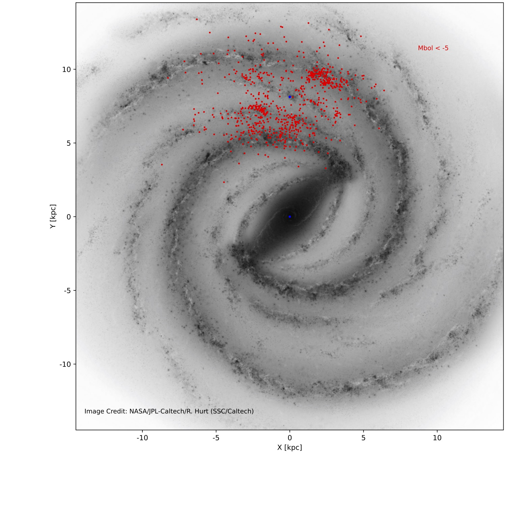
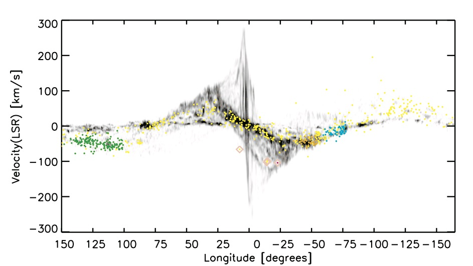

A&A forthcoming
Finding chartes (2MASS, WISE) of the 335 bright late-type stars
Plots of the BPRP spectra available for new sample of 335 bright late-type stars
Plots of the SED fit with DUSTY models for the 335 bright late-type stars
. the TABLE of the luminosity and extinction of the new 335 selected cRSGs (available at CDS)


Image Credit: We thank the A&A Journal, Dr. Hurt from JPL, Dr. Dame
FIG10a script
table_xyVlsr2.csv File to make Fig10a: Joint samples of stars in areas A&B from Messineo&Brown (2019), Messineo (2023), and present work